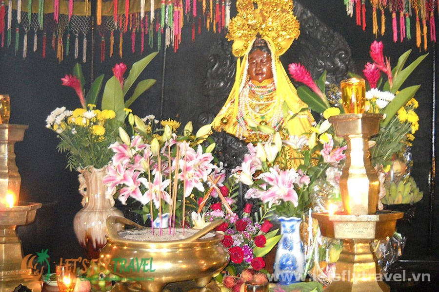

Giới thiệu về tháp bà Ponagar

Tháp Bà là nơi lưu lại nhiều bia ký cổ của người Chăm theo các sự kiện như: chuyện tháp bị giặc biển đốt phá năm 774, xây dựng tượng thần Sri Satya Mukhalinga vào năm 784, vua Vikrantavarman III ghi lại công lao xây dựng của các tiên vương, vua Vikrantavarman II ghi các lễ vật dâng cúng chư thần, vua Indravarman II dựng pho tượng Bhagavati (tức Po Nagar) bằng vàng vào năm 918.
Tháp bà Ponagar là dấu tích còn sót lại của một nền văn minh cổ xưa, tháp được vua Chămpa xây dựng vào những năm 813-817 khi đạo Hindu ở Chămpa hưng thịnh, do sự bào mòn của thời gian, ngày nay tháp đã bị hư hại khá nhiều.
Men theo con đường mòn dưới chân đồi nhỏ cao khoảng 50 mét so với mực nước biển cách trung tâm thành phố 2 Km về hướng Bắc, leo lỏi bám vào những hòn đá làm điểm tựa leo lên đỉnh đồi, đâp vào mắt du khách là khoảng đất trống rộng bao la bằng phẳng là nơi tọa lạc của quần thể di tích cổ tháp bà gồm những trụ tháp gạch nung cao hơn 5 mét, và 4 tòa tháp lớn.
Quần thể di tích tháp bà cấu trúc gồm 3 phần hợp thành, phần thấp nhất là ngôi tháp cổng nằm ngang với mặt đất có các bậc thang bằng đá hoa cương dẫn lên tầng thứ hai, do thời gian rêu phong và con người tàn phá theo năm tháng nên tầng tháp này hiện nay chỉ còn phế tích.
Hai ngôi tháp lớn, một cao 18 mét, một cao gần 23 mét cũng chính là tháp Ponagar thờ nữ thần Ponagar (tiếng Chăm có nghĩa là Mẹ Xứ Sở), tất cả đều được xây bằng gạch nung. Tháp lớn có 4 tầng, mỗi tầng đều có họa tiết hình cánh cổng, tượng thần linh và hình thú bằng đá; 4 tháp nhỏ được bố trí đều đặn ở 4 góc, tạo những đường nét hết sức độc đáo.
Có lẽ tất cả mọi du khách đến đây đều có chung một thắc mắc là ở thời đại cổ xưa từ thế kỉ 8 - 13 làm cách nào mà người Chăm đưa những viên gạch nung kích cỡ to như thế chồng khít rịt lên nhau, làm thế nào để kết dính các viên gạch nung lại với nhau mà độ bền chắc của chúng đến ngày nay vẫn là một đề tài nghiên cứu của nhiều nhà khoa học. Đó cũng chính là nét độc đáo bí ẩn hấp dẫn những du khách yêu thích sự tò mò, khám phá những di tích khảo cổ.
Mặc dù thời gian đã làm toàn bộ khu di tích trở nên cũ kĩ rêu phong nhưng vẫn thể hiện là một công trình nghệ thuật kiến trúc và điêu khắc độc đáo của người Chăm cổ. Những trụ đá cao to, tòa tháp rêu phong cổ kính với những tượng đá bạc màu theo năm tháng sẽ mãi tồn tại như một lời nhắn nhủ rằng dù ở thời đại nào, tín ngưỡng tâm linh cũng là một phần không thể thiếu trong cuộc sống con người.
